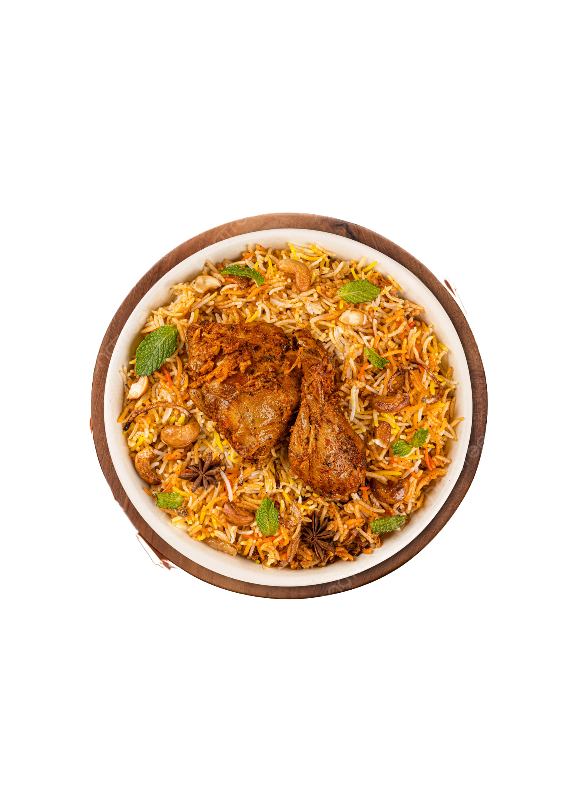

Recipe Card
BRIYANI

Preparation Time:
55 minutes
Serving size:
2
View Ingredients
Basmathi Rice(500g)
Water(1.5-2 liters)
Salt (2 teaspoons)
bay leaves(2-3)
Green cardamom pods(4-5)
Cloves(4-5)
Cinnamon sticks(1-2)
Cumin seeds(1 teaspoon)
Black pepercorns(5-6)
Meat(Chicken 1kg cut into pieces)
Onions(3 large thinly sliced)
Tomatoes(2 medium chopped)
Ginger-Garlic Paste (2 tablesppons)
Green Chilies(4-5 slit)
Yogurt(200 grams)
Mint Leaves(1 cup chopped)
Coriander Leavs(1 cup chopped)
Ghee or Oil(4 tablesppons)
Lemon Juice(From 1 lemon)
Salt(to taste)
Saffron (A pinch optional,for color)
Food Color(optional)
View Steps
Step1: In a large bowl mix the given ingredients
Step2: Mix well and let it marinate for at least 30 minutes
Step3: Rinse the basmati rice under cold water until the water runs excess starch.soak rice in 30 minutes
Step4: Cook the meat
Step5: Cook on low heat for about 15-20minutes if using pressure cooker,weight on the lid
Step6: Turn off the heat and let it for 10min before opening the lid and serve it
Start Cooking
Next Step
Time Remaining:
30:00